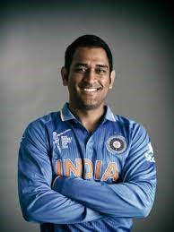

Virat Kohli

Virat Kohli (Hindi pronunciation: born 5 November 1988) is an Indian international cricketer and former captain of the India national team who plays as a right-handed batsman for Royal Challengers Bangalore in the IPL and for Delhi in Indian domestic cricket. Widely regarded as one of the greatest batsmen of all time,[3] Kohli holds the records for scoring most runs in T20 internationals and in the IPL. In 2020, the International Cricket Council named him the male cricketer of the decade. Kohli has also contributed to India's successes, including winning the 2011 World Cup and the 2013 Champions trophy. Born and raised in New Delhi, Kohli trained in West Delhi Cricket Academy; started his youth career with Delhi Under-15 team. Kohli made his international debut in 2008 and quickly became a key player in the ODI team. He made his Test debut in 2011. In 2013, Kohli reached the number one spot in the ICC rankings for ODI batsmen for the first time. During 2014 T20 World Cup, he set a record for the most runs scored in the tournament. In 2018, he achieved yet another milestone, becoming the world's top-ranked Test batsman, making him the only Indian cricketer to hold the number one spot in all three formats of the game. His form continued in 2019, where he became the first player to score 20,000 international runs in single decade. In 2021, Kohli made the decision to step down as the captain of the Indian national team for T20Is, following the T20 World Cup and in early 2022 he stepped down as the captain of the Test team as well.
Sachin Tendulkar

Sachin Ramesh Tendulkar BR born 24 April 1973) is an Indian former international cricketer who captained the Indian national team. Nicknamed "The Little Master"[4] and "Master Blaster"[5], he is regarded as one of the greatest batsmen in the history of cricket.[6] He is the all-time highest run-scorer in both ODI and Test cricket with more than 18000 runs and 15000 runs respectively in total.[7] He also holds the record for receiving the most man-of-the-match awards in international cricket.[8] Known for his large fanbase and described by ESPNcricinfo as 'the most worshipped player in the world'.[9] Tendulkar took up cricket at the age of eleven, made his Test match debut on 15 November 1989 against Pakistan in Karachi at the age of sixteen, and went on to represent Mumbai domestically and India internationally for close to twenty-four years. In 2002, halfway through his career, Wisden ranked him the second-greatest Test batsman of all time, behind Don Bradman, and the second-greatest ODI batsman of all time, behind Viv Richards.[10] Later in his career, Tendulkar was part of the Indian team that won the 2011 Cricket World Cup, his first win in six World Cup appearances for India.[11] He had previously been named "Player of the Tournament" at the 2003 edition of the tournament.
MS Dhoni
Mahendra Singh Dhoni , commonly known as MS Dhoni, is a former Indian cricketer and captain of the Indian national team in limited-overs formats from 2007 to 2017, and in Test cricket from 2008 to 2014. He is also the current captain of Chennai Super Kings in the Indian Premier League. Under his captaincy, India won the 2007 ICC World Twenty20, the 2011 Cricket World Cup, and the 2013 ICC Champions Trophy, the most by any captain. He also led India to victory in the 2010 and 2016 Asia Cup. Additionally, under his leadership, India won the 2010 and 2011 ICC Test Mace and 2013 ICC ODI Championship. Dhoni is a right-handed wicket-keeper batsman known for his calm captaincy and his ability to finish matches in tight situations. Mahi scored 17,266 runs in International Cricket (including 10,000 plus runs in ODI Internationals) and is considered one of the best finishers in the game. He is also one of the greatest wicket-keepers and captains in the history of cricket. In Indian domestic cricket he played for Bihar and Jharkhand Cricket team. He is the captain of Chennai Super Kings (CSK) in the Indian Premier League. He captained the side to championships in the 2010, 2011, 2018 and 2021 editions of IPL league. He also scored 4,978 runs in IPL. Also under his captaincy Chennai Super Kings (CSK) Won Champions League T20 two times, in 2010 and 2014.